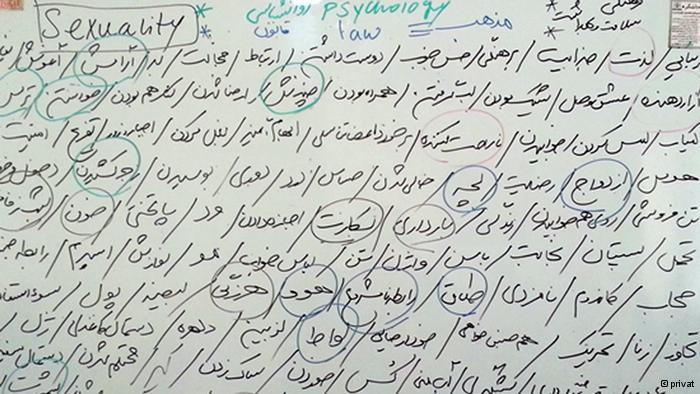

|
|

چرا بایست به سکسوالیته پرداخت؟ / نفیسه آزاد
يكشنبه24 آذر 1392
آیا سکسوالیته امری خصوصی است؟ چرا باید در مورد سکسوالیته حرف زد یا به بیان دیگر حرف نزدن از سکسوالیته، آموزش ندیدن و ننوشتن از آن چه آسیبهایی به دنبال دارد؟ چرا در زبان فارسی، کلمات یا ادبیات مناسبی وجود ندارد که بتوان به واسطهی آن از سکسوالیته در حوزهی عمومی حرف زد؟ آیا حرف نزدن از سکسوالیته به معنای آن است که ما در مورد آن چیزی نمیدانیم؟ اگر پاسخ این سوال منفی است، دانستهها، باورها و ارزشهای ما در این زمینه از کجا میآید؟ در این مقاله قصد دارم تا حد ممکن و به زبانی ساده به این سوالات پاسخ دهم و ضرورت پرداختن به این مسئله را در زمینهی اجتماعی ایران پررنگ کنم.
در یکی از محلات مرکزی تهران هستیم، بعد ازظهری پاییزی است و خانمها که حدود ۱۵ نفرند از این طرف و آن طرف خود را به اینجا رساندهاند، جوانترینشان ۲۰ سال سن دارد و مسنترینشان ۲۷ ساله است. دو نفر متاهل و مابقی مجردند و قرار گذاشتهایم تا چند ساعتی در مورد سکسوالیته حرف بزنیم.

ماژیک را برمیدارم و روی تختهی سفید مینویسم: «سکسوالیته». بلافاصله همهمه و خندههای شگفتزده فضا را پر میکند. از آنها میخواهم سفیدی پیش رو را از کلماتی که به ذهنشان میرسد پُر کنند. ابتدای کار کُند و سخت پیشمیرود با همان خندهها و شوخیهای زیر لبیِ آشنا، اما کم کم جریان به راه میافتد و فضای سفید روبرویمان شروع میکند به سیاه شدن، کلمات یکی یکی کنار هم قرار میگیرند و فضای سفید با آنچه که ما از سکسوالیته در ذهن داریم پُر میشود.
دهنهایی که تا نیمساعت پیش بسته بود، حالا برای گفتن شتاب دارد، سفیدی سیاه میشود و فضا آرامتر. از آن خندهها و شیطنتها کمتر خبری هست، جمع ساکت و ساکتتر میشود، از حجم کلماتی که بر سرمان باریده است شوکه شدهایم.
آیا فکر میکردیم که یک کلمه چنین دریایی از کلمات را یادآوری کند؟ واقعیت این است که در قدم اول سکسوالیته ما را با خود تنها به «رابطهی جنسی» و "رختخواب" میبرد، حتی این تصویرهای محدود ذهنی هم جزو مسائلی است که انگار"نباید" یا "درست نیست" از آنها حرف بزنیم. تا به حال هم شاید حرف نزده باشیم، مگر به نجوا، مگر با دوستی صمیمی یا شاید مگر در مواقع استیصال. اما آیا سکسوالیته محدود به "رابطهی جنسی" است؟
اگر اینطور است تکلیف موضوعاتی چون بارداری، پایان دادن داوطلبانه به بارداری، بکارت، تجاوز، زنا، ازدواج و طلاق، همجنسگرایی، هویتها و گرایشهای متنوع جنسی، احساساتی مثل شرم، ترس یا شادی، شور و آرامش و شهوت، سلامت و بهداشت جنسی چیست؟ آیا این مسائل با سکسوالیته نامربوطند؟
چرا حرف زدن از سکسوالیته تا این اندازه سخت است؟
برای سکسوالیته هنوز معادلی در فارسی نداریم، شاید به این دلیل ساده که هرگز در اینباره گفتگوی عمومی شکل نگرفته است، زبان فارسی هنوز یک ادبیات رسمی قابل بحث در فضای عمومی در ارتباط با سکسوالیته ایجاد نکرده است.
ادبیات ما در این زمینه همچنان ناقص، مبهم و پریشان است. کلمات و افعالی که باید برای حرف زدن در این مورد استفاده کنیم پر از سمتگیریهای اخلاقی و جنسیتی است. فرهنگ جنسی جاری بخشی از بدن و زندگی ما را دزدیده و آن را در غالب فحش، تمسخر و تحقیر علیه ما استفاده میکند. در چنین شرایطی استفاده از همان ادبیات - در نبود ادبیات جایگزین- برای بیان شور، لذت، رابطهای آمیخته با احترام و برابری، آموزش یا بحثهای حقوقی دشوار به نظر میرسد.
برای بسیاری از فارسیزبانان، به ویژه زنان، صحبت کردن از مسائل مرتبط با سکسوالیته عذابآور است. این موضوع از ابتدای زبانآموزی به کودکان، رابطهی آنها را با تن خود دچار پیچیدگیهای زیادی میکند. آنها به تدریج متوجه میشوند آنچه در کوچه و خیابان میشنوند جایی برای مطرح شدن در خانه ندارد چون زشت، غیراخلاقی و ناموجه است.
این موضوع برای مردان بدل به بخشی از هویت مردانه آنها میشود که زبان روزانهشان را در غیاب زنان فرم میدهد و برای زنان منطقهای میشود ممنوعه برای وارد شدن. این اتفاق همانقدر که در مورد زنان مانع گفتگوی سالم بر سر مسائل مربوط به سکسوالیته است، برای مردان نیز هست. مردان نیز هرگز از این زبان برای بیان تجربیات یا مشکلات خود به شکلی واقعی استفاده نمیکنند.
حرف زدن از موارد مربوط به سکسوالیته برای ما در محیطهای عمومی سخت است چون بنا به توصیههای فرهنگی مبتنی بر حفظ "حیا" و "عفت عمومی" اینگونه مکالمات منجر به "پردهدری" و "بیحیایی" و فرد مورد نظر به "بیشرمی" و در بهترین حالت به "بیادبی" متهم میشود. فرهنگ غالب ما در این موارد مروج "پنهانکاری" است و به این موضوع بیتوجه است که حرف نزدن از موضوعی که در تمام زندگی جاری است و کنترل بسیاری از شئونات آن را بر عهده دارد، در واقع سپردن آن به باد شایعات و افسانهها و حرفهای درگوشی است، چون یقینا حذف موضوعی به این اهمیت از عرصهی گفت و شنود عمومی آن را به کلی از میان نمیبرد. موضوعی که همه از آن مطلعند، آن را تجربه میکنند اما در یک همراهی دسته جمعی حرف زدن از آن را ممنوع کردهاند.
باز از سوی دیگر باید به این موضوع توجه داشته باشیم که ممنوعیت حرف زدن در باره سکسوالیته مانع از دخالت ساختارهای فرهنگی، حقوقی، مذهبی در آن نمیشود، بلکه آن را به مثابه موضوعی پارادوکسیکال در برابر فرد قرار میدهد؛ تا جاییکه به "تصمیمگیری" مربوط میشود، موضوع عمومی است، آنجایی که صحبت از "حق انتخاب و آگاهی فردی" میشود، موضوع خصوصی و غیرقابل بحث است؛ ممنوعیتی که شکلی از انکار سرکوبگرانه است.
تسلط روایت "یگانه" به جای "روایتها"
انگارههای فرهنگی از ابتدا به ما تلقین میکنند که تنها یک روایت در مورد سکسوالیته وجود دارد. روایت "فردِ دگرجنسخواهی" که ازدواج میکند و به خواست خود و با هزار امید و آرزو بچهدار میشود و داستان ادامه دارد. خارج از این روایت، هر روایت دیگری "ناممکن" دانسته میشود.
در فرهنگ غالب همهی دختربچهها عروس میشوند و همهی پسربچهها داماد. هر پسربچهای به مردی قدرتمند و عیالوار تبدیل خواهد شد و هر دختربچهای به نمونهای مثالی از "اسطورهی مادری". هر قدمی خارج از این روایت، حذف و انکار میشود. در این روایت نقش مرد و نقش زن به تمامی نوشته شده و فرد تنها بازیگر آن است. پسر به پدر نگاه میکند و دختر به مادر. عبارت "زنها این طور هستند" و "مردها اینطور هستند" جلوی انحرافی حتی کوچک از این نوع نقشآفرینی را میگیرد. همین روایت یگانه است که "افسانهی بکارت" را در دل خود میپروراند و برای "تجاوز" همیشه روایتی یگانه چون "رفتار و پوشش نامناسب زن" و "میل جنسی مهار ناشدنی مرد" را تکرار میکند.
این روایت استوار بر ستونهایی چون "کلیشههای جنسیتی" و "روابط جنسیتی نابرابر" است. این روایت یگانه به مدد رسانههای جریان غالب و روندهای جامعهپذیر چنان تبلیغ و بازتولید میشود که هرگونه مقاومت یا تغییر در یکی از جزئیات با مجازاتهای اجتماعی سنگین روبرو میشود. در نتیجه اگر فرد خود را مطابق با این روایت نیابد اولین توضیح او حتی برای خودش "بیماری"، "انحراف" یا نظایر آن است. این روایت یگانه است که "نامنطبقان" را به حاشیه میراند، آنها را نادیده میگیرد و حقوقی برایشان قایل نیست.
"آموزش" همان "ترویج" است
فرهنگی که روایت یگانه را در مورد سکسوالیته میپذیرد نیازی به آموزش یا گفتگو در اینباره نمیبیند. در واقع این روایت استوار بر عدم آموزش واقعی است و تنها آموزش سنتی و نقل سینه به سینهی همان انگارههای پیشین را مجاز میداند. در این روایت آموزشهای مرتبط با "روابط جنسی" ترویج بیبند و باری و آموزش حقوقی به زنان مثلا در مورد شرایط ضمن عقد، تضعیف بنیان خانواده و تشویق زنان برای طلاق گرفتن دانسته میشود.
در روایتی که همهی جزئیات را طراحی کرده است آموزش نقشی ندارد، مگر انتقال همان آموزشهای مبتنی بر چارچوب روایت. "چشم و گوشها باید بسته بماند" و "حرمت برخی چیزها" نباید ریخته شود. و یک دلیل همیشگی و استوار برای برچیدن بساط آموزش و به اشتراک گذاشتن تجربیات وجود دارد که هر بار با قدرت تکرار میشود: "سکسوالیته امری خصوصی است." آیا میشود با این برهان، سرپوش را دوباره سرجای خود برگرداند، تخته را از همهی سیاهیها پاک کرد و همهچیز را به بهانهی خصوصی بودن پنهان و فراموش کرد؟
سکسوالیته موضوعی خصوصی است یا عمومی؟
اغلب بحثهایم بهویژه با زنها در مورد سکسوالیته یک آغاز مشخص دارد: «اینها موضوعاتی خصوصی است و نباید از آن در محیطهای عمومی حرف زد.» اما همیشه سوال بعدی این است مفهوم خصوصی بودن سکسوالیته دقیقا چیست؟
با توجه به بحثی که پیش از این مطرح شد سوالی که از آنها میپرسم این است که اگر موضوعی خصوصی است و هر فرد باید به تنهایی در مورد آن تصمیم بگیرد چرا اینهمه حکم قضایی و قانونی و مذهبی و اجتماعی در مورد سکسوالیته وجود دارد؟ آیا این موضوع تا آن حد خصوصی است که شما بدون مجوز میتوانید با هرکسی که خواستید - از هر جنس، طبقه یا ملیتی- رابطه داشته باشید، ازدواج کنید یا همخانه شوید؟ اگر خصوصی است عبارتهایی چون نامشروع، غیرقانونی، خارج از عرف، نامناسب یا صدها عبارت نظیر آن چه چیزی را نشان میدهد؟
تکلیف بیماریهای مرتبط با سکسوالیته، بارداری، نازایی، حق برخورداری از وسایل پیشگیری، حضانت فرزندان، حجاب و مسائلی از این دست چه میشود؟ موضوعی که خصوصی است چرا باید جولانگاه عمومیترین ساختارهای اجتماعی باشد؟ آیا خصوصی بودن مسائل مرتبط با سکسوالیته مثلا با خصوصی یا شخصی بودن طبع فرد در انتخاب غذا یکی است؟
پاسخها منفی است. آنها میپذیرند که خانواده، جامعه، قانون و مذهب در انتخابها و نوع رفتار آنها نه تنها موثر است بلکه نقشی تعیینکنندهتر از سلیقه یا گرایشهای فردی دارد. بگذارید برای روشنتر شدن بحث مثالی بزنیم: آیا ازدواج کردن یا نکردن امری شخصی است؟ پاسخ تا اینجای کار میتواند مثبت باشد (در واقع اگر با اغماض از فشارهای اجتماعی و فرهنگی و حتی شغلی و اقتصادی بر مجردان صرف نظر کنیم.) ازدواج کردن با "چه کسی" و چطور؟ آیا پاسخ این سوال هم مثبت است؟ آیا ازدواج فرد با هر جنس، طبقه، ملیت، قومیت و نژادی مجاز است؟ اینجا جواب پیچیدهتر میشود. قانون مدنی ایران ازدواج شما را با هر جنس مخالفِ مسلمانِ ایرانی مجاز میداند.
اما فرهنگ عموما دایره را تنگتر میکند: هر جنس مخالفِ مسلمانِ هم مذهبِ (شیعه یا سنی) ایرانیِ همطبقه که سن مرد از زن بالاتر باشد و از نظر اقتصادی و اجتماعی متناسب باشد، را برای ازدواج بهتر میداند.
آیا اگر در همین دایرهی محدود شده ازدواج کردید، بچه داشتن یا نداشتن امری شخصی است؟ پاسخ در وهله اول مثبت است. اما اگر دقیقتر نگاه کنیم، شرط فرزند نداشتن در جاری شدن عقد دائم به عنوان "شرط ضمن عقد" از نظر مذهبی و قانونی در ایران ممنوع است، این به کنار آیا زوجهایی که بچه نداشته باشند، بچهدار نشوند، یا فرزندی را به سرپرستی قبول کنند تحت فشارهای فرهنگی جامعه قرار میگیرند یا خیر؟ و هزاران جزئیات دیگر که تقریبا "انتخاب آزاد" را تبدیل به امری بسیار دور از دسترس میکند.
در روایت "ما"، شما باید یک دگرجنسخواهِ متاهلِ صاحب فرزند باشید که تا آخر عمر با شادی و خوشحالی در کنار همسر خود زندگی میکنید، حتی وقتی همهی این استانداردها را رعایت میکنید، آموزش رسمی، صحبتکردن از مسائل مربوط به رابطهی جنسی در محافل عمومی و از همه مهمتر شک کردن به روایتِ یگانهی جزئینگر، جزء حقوق شما نیست.
مریم ۲۶ ساله و متاهل و دارای دو فرزند است؛ او میگوید: «فقط تصور کنید که من در خانه از علایق، انتظارات یا فانتزیهایم بگویم، نمیگویند چقدر بیحیاست؟ چقدر بی شرم است؟ به من شک نمیکنند که این اطلاعات را از کجا آوردهام؟»
رویا ۲۰ ساله و مجرد است و میگوید: « یک بار از معلم مدرسه در مورد پرده بکارت و اینکه چیه و چطور از بین میره و آیا میشه دیدش یا نه؟ پرسیدم. نه تنها بهم جواب ندادند بلکه مدیر ساعت بعد منو خواست توی دفتر و ازم پرسید که این اطلاعات رو برای چی میخوام و آیا مشکلی برام پیش اومده؟ منم از ترسم دیگه هیچ وقت چیزی نپرسیدم.»
دغدغهی مریم و رویا دغدغهای جدی برای زنهاست. اما به باور من در سوی مردان نیز اوضاع بهتر از این نیست چرا که آنها هم مانند زنان درگیر افسانههایی بی اعتبار در حوزهی سکسوالیته و در قید کنترلهای مختلف هستند. با این اوصاف قبول عمومی بودن سکسوالیته نباید کار سختی باشد. اما چرا "باید" در مورد سکسوالیته حرف زد؟
چرا باید در مورد سکسوالیته حرف زد؟
ممنوعیت یا محدودیت گفتوگو از سکسوالیته که در پرتو آموزههایی چون "حیا"، "شرم"، "آبرو" یا نظایر آن توجیه میشود، تنها منجر به دامن زدن به افسانهها و باورهای نادرست، قدرتمندتر شدن ساختارهای اجتماعی- فرهنگی تبعیضآمیز و بروز و رشد انواع آسیبهای اجتماعی میشود.
از شما میخواهم یک برگ کاغذ بردارید. به کودکی خودتان فکر کنید و ببینید چه سوالاتی در ارتباط با سکسوالیته در ذهن داشتید، آنها را بنویسید، حالا روی برگهی دیگری سوالات دوران بلوغ را بنویسید و روی برگهی سوم سوالاتی که تا امروز هم برای شما باقی است.
حالا به این لیست خوب نگاه کنید. همهی ما دوران کودکی را با آنهمه سوال و کنجکاوی کم و بیش به خاطر میآوریم. دوران مدرسه، گروههای دوستی، شایعاتی که مثل برق و باد در همهی مدرسه میپیچیدند، اولین نشانههای بلوغ در تنمان و تپیدنهای دل از سر شور یا اضطراب.
آشنایی هر فرد با تَن خود از کودکی شروع میشود و در دوران بلوغ به نقطهای حیاتی میرسد. در حالیکه نمیتوان ادعا کرد روند این آشنایی جایی متوقف میشود اما میتوان گفت که اولین آشناییها در دوران کودکی و طوفان بلوغ از مهمترین گذرگاههای این آشنایی محسوب میشود.
آنچه در میان گروههای دوستی به عنوان حقایق مرتبط با تن رد و بدل میشد، تا چه اندازه صحت داشت؟ ندانستن و باور کردن مطالب نادرست تا چه اندازه به ما نگرانی، عدم اعتماد به نفس و شرم تحمیل کرد؟ ما چطور به سوالات بیحد و حسابمان پاسخ دادیم؟ چطور تنمان را که دریایی از اشتیاق و تغییر بود درک کردیم؟ اگر پاسخ درست بسیاری از سوالاتمان را میدانستیم زندگیمان چه تغییراتی میکرد؟
دانش ما یا از گروههای دوستی و همسال میآمد یا از کتابهای رنگ و وارنگ که معلوم نبود بر چه مبنایی نوشته شدهاند و خوانندگانشان را از سنگ شدن، فلج شدن و کور شدن در اثر رفتارهای جنسی خاص میترساندند.
در نبود آموزشهای نظاممند و منع گفتوگوی صریح، منبع دیگری که اغلب اطلاعات را در این زمینه شکل میدهد فیلمهای پورنو است. عموم نوجوانان دیر یا زود، کم یا زیاد، به شکل گروهی یا مخفیانه و انفرادی دیدن فیلم پورنو را تجربه میکنند که در حالت کلی اتفاق عجیب یا خطرناکی نیست، اما زمانی که در نبود اطلاعات و آموزش صحیح تبدیل به یکی از منابع موثق آموزشی آنها میشود داستان چیز دیگری است.
زینت ۱۹ ساله است و برایم تعریف میکند که اولین بار در ۱۶ سالگی بخشی از یک فیلم پورنو را دیده است، زینت میگوید : «اینقدر از چیزی که دیدم شوکه شده بودم، که نمیخواستم باور کنم، کسانی هم که دوستشان دارم و به آنها اعتماد دارم چنین روابطی با یکدیگر دارند.»
از سوی دیگر باید به این نکته هم توجه کنیم که سکسوالیته در هیچ دورهای از زندگی انسانها محو نمیشود، در کودکی، بلوغ، جوانی، میانسالی و کهنسالی با مشخصههای منحصر به فرد همان دورهی خاص، با نیازها و پرسشهایش در زندگی حضور دارد.
سوالاتی هست که تا آخر عمر بیپاسخ میماند و پاسخهایی هست که یک عمر کسی را دچار باوری غلط در مورد خودش میکند. حتی افراد دگرجنسخواهی که ازدواج میکنند، یعنی به لحاظ قانونی، مذهبی و عرفی بههنجارترین و بامجوزترین رابطه را با یکدیگر دارند در هیچکجای چرخه عمر خود تا رسیدن به ازدواج آموزشی نمیبینند. چه برسد به افرادی با گرایشهای دیگرِ جنسی، یا کسانی که بیرون از چارچوب ازدواج رابطهای را تجربه میکنند، یا به هر تقدیر جایی از "روایت خطی" بیرون میزنند و در آن نمیگنجند.
لازم است جایی این چرخهی معیوب سکوت و انکار و غوغای اطلاعات غلط، این چرخهی آسیبزای پنهان "آگاهیبخشی" قطع شود. در هر دورهی سنی که باشیم لازم است آموزشها و آگاهیهایی را در ارتباط با سکسوالیته و مسائل مربوط به آن بگیریم، لازم است خود را از بار باورهای غلط، داستانهای خرافی رها کنیم و لازم است بسیاری از این باورها را به چالش بکشیم و تلاش کنیم مولفههای قدرت را به سمت برابری تغییر دهیم.
این آموزشها باید نظاممند باشد و در یک چارچوب اصیل ارائه شوند، در غیر این صورت ما نیز چیزی بیشتر از آنچه مادران و پدران و دوستانمان به ما گفتند برای گفتن به نسل بعدی نداریم.
به اینجا که میرسیم تخته از کلمات زشت و زیبا پر شده است. دیگر نه کسی میخندد نه شوخی میکند، بخش بزرگی از ترس ما از حرف زدن از "خودمان"، از "سکسوالیته"، از نیازها و رویاها و تجربیات خوب و بدمان ریخته است، نقطهی شروع صحبت میشود اینکه، "چطور روایت شخصی من شکل گرفت؟"